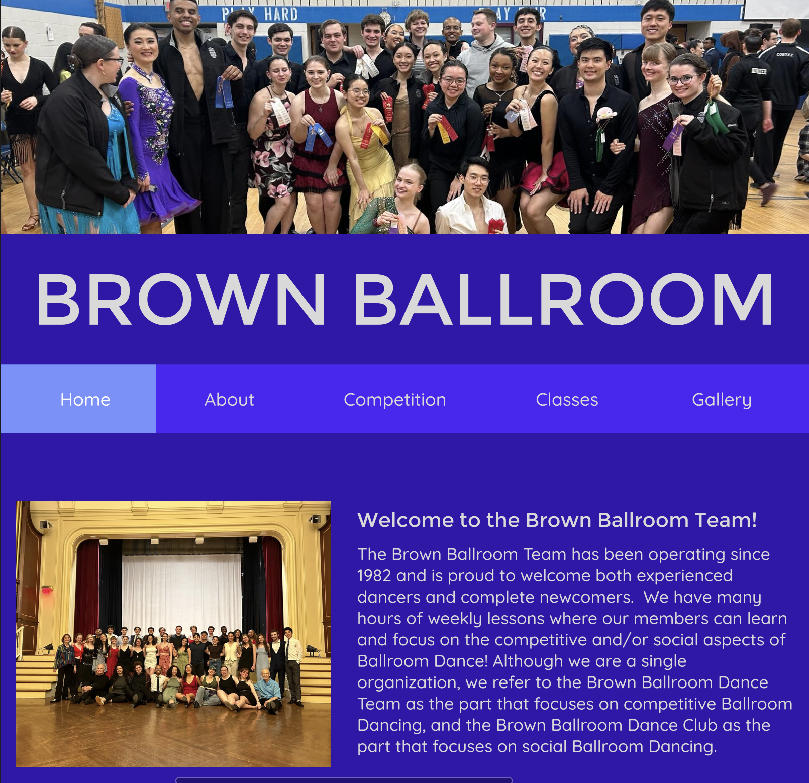
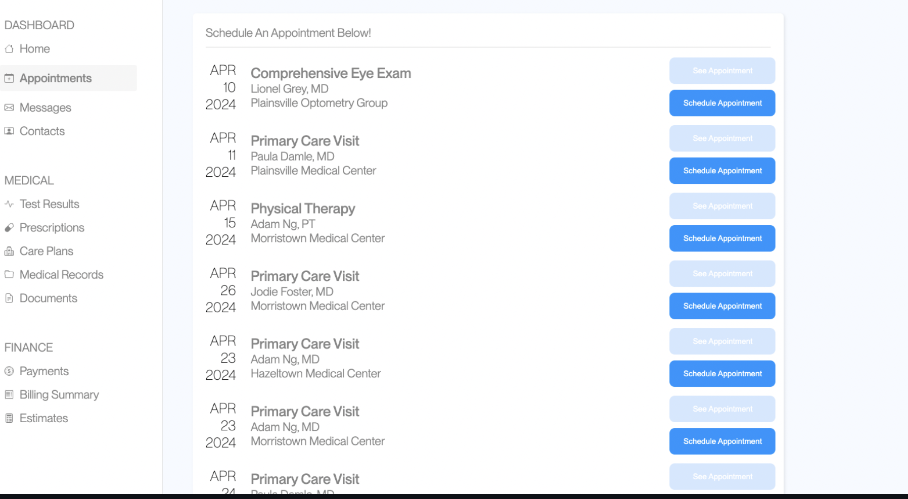

Hi, I'm Fanny
A UX designer dedicated to creating simple, creative solutions that everyone can use. With a background in environmental studies, I design with sustainability and accessibility in mind.
About Me
I specialize in designing user-friendly interfaces that are accessible to non-computer scientists, driven by my own experiences with the challenges of CS and programming. My goal is to develop intuitive and effective solutions that enable everyone, regardless of their technical background, to interact with technology effortlessly.
Featured Projects

Responsive Redesign
Improving the user experience by making the website responsive.

A/B Testing
Using A/B testing to enhance user engagement and satisfaction.